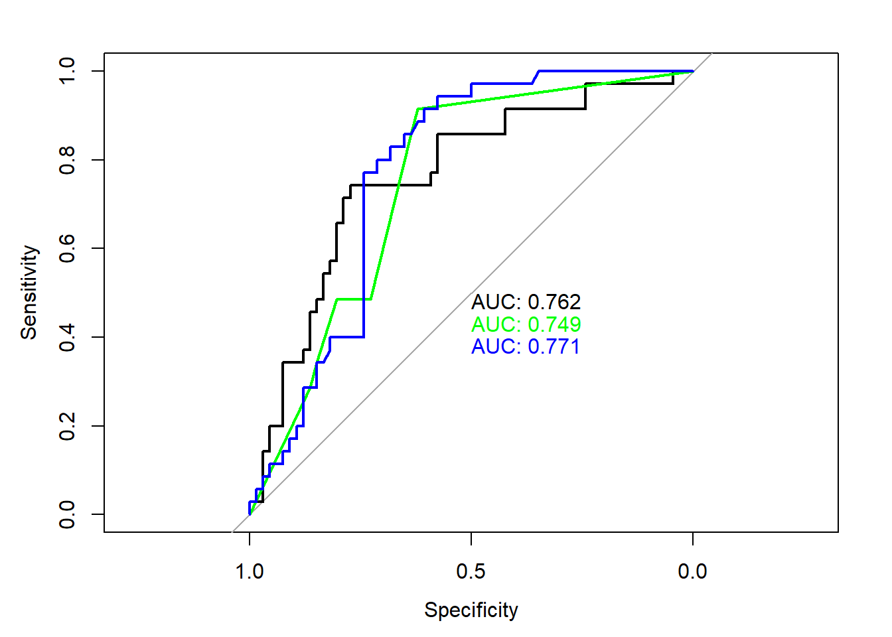

Code
library(sf)
library(terra)
library(tidyverse)
library(tmap)
library(tree)
library(randomForest)Carolyn Koehn
download_unzip_read <- function(link){
tmp <- tempfile()
download.file(link, tmp)
tmp2 <- tempfile()
unzip(zipfile=tmp, exdir=tmp2)
shapefile.sf <- read_sf(tmp2)
}
### FS Boundaries
fs.url <- "https://data.fs.usda.gov/geodata/edw/edw_resources/shp/S_USA.AdministrativeForest.zip"
fs.bdry <- download_unzip_read(link = fs.url)
### CFLRP Data
cflrp.url <- "https://data.fs.usda.gov/geodata/edw/edw_resources/shp/S_USA.CFLR_HPRP_ProjectBoundary.zip"
cflrp.bdry <- download_unzip_read(link = cflrp.url)
wildfire_haz <- rast("/opt/data/data/assignment01/wildfire_hazard_agg.tif")
cejst <- st_read("/opt/data/data/assignment01/cejst_nw.shp", quiet=TRUE) %>%
filter(!st_is_empty(.))[1] FALSE[1] FALSE[1] FALSE
Call:
glm(formula = CFLRP ~ LMI_PFS + LHE + HBF_PFS + WHP_ID, family = binomial(link = "logit"),
data = cejst_mod)
Coefficients:
Estimate Std. Error z value Pr(>|z|)
(Intercept) -0.66462 0.14347 -4.632 3.62e-06 ***
LMI_PFS 0.17284 0.16881 1.024 0.306
LHE -0.25551 0.15791 -1.618 0.106
HBF_PFS -0.01511 0.16081 -0.094 0.925
WHP_ID 0.88902 0.16785 5.297 1.18e-07 ***
---
Signif. codes: 0 '***' 0.001 '**' 0.01 '*' 0.05 '.' 0.1 ' ' 1
(Dispersion parameter for binomial family taken to be 1)
Null deviance: 330.74 on 255 degrees of freedom
Residual deviance: 290.03 on 251 degrees of freedom
AIC: 300.03
Number of Fisher Scoring iterations: 4Loading required package: lattice
Attaching package: 'caret'The following object is masked from 'package:purrr':
lift# get row numbers of training data split
# cejst_mod$CFLRP is used to ensure ~equal yes/no split
Train <- createDataPartition(cejst_mod$CFLRP, p = 0.6, list=FALSE)
# subset of our data corresponding to Train row numbers
training <- cejst_mod[Train, ]
# subset of our data NOT in the vector Train
testing <- cejst_mod[-Train, ]# logistic regression fit with the training data
train.log <- glm(CFLRP ~ LMI_PFS + LHE + HBF_PFS + WHP_ID,
family = binomial(link = "logit"),
data = training)
# generate predictions for the testing data
log.pred <- predict(logistic.global, testing, type="response")
# assign predictions Yes/No based on probability
pred <- as.factor(ifelse(log.pred > 0.5,
"Yes",
"No"))
# print confusion matrix and its metrics
confusionMatrix(testing$CFLRP, pred)Confusion Matrix and Statistics
Reference
Prediction No Yes
No 61 5
Yes 26 9
Accuracy : 0.6931
95% CI : (0.5934, 0.781)
No Information Rate : 0.8614
P-Value [Acc > NIR] : 0.999996
Kappa : 0.2111
Mcnemar's Test P-Value : 0.000328
Sensitivity : 0.7011
Specificity : 0.6429
Pos Pred Value : 0.9242
Neg Pred Value : 0.2571
Prevalence : 0.8614
Detection Rate : 0.6040
Detection Prevalence : 0.6535
Balanced Accuracy : 0.6720
'Positive' Class : No
Confusion Matrix and Statistics
Reference
Prediction No Yes
No 53 13
Yes 18 17
Accuracy : 0.6931
95% CI : (0.5934, 0.781)
No Information Rate : 0.703
P-Value [Acc > NIR] : 0.6329
Kappa : 0.2988
Mcnemar's Test P-Value : 0.4725
Sensitivity : 0.7465
Specificity : 0.5667
Pos Pred Value : 0.8030
Neg Pred Value : 0.4857
Prevalence : 0.7030
Detection Rate : 0.5248
Detection Prevalence : 0.6535
Balanced Accuracy : 0.6566
'Positive' Class : No
Confusion Matrix and Statistics
Reference
Prediction No Yes
No 49 17
Yes 17 18
Accuracy : 0.6634
95% CI : (0.5625, 0.7544)
No Information Rate : 0.6535
P-Value [Acc > NIR] : 0.4626
Kappa : 0.2567
Mcnemar's Test P-Value : 1.0000
Sensitivity : 0.7424
Specificity : 0.5143
Pos Pred Value : 0.7424
Neg Pred Value : 0.5143
Prevalence : 0.6535
Detection Rate : 0.4851
Detection Prevalence : 0.6535
Balanced Accuracy : 0.6284
'Positive' Class : No
Based on accuracy, perhaps logistic regression or tree is best?
library(pROC)
predict.tree <- predict(train.tree, newdata=testing, type="vector")[,2]
predict.rf <- predict(train.rf, newdata=testing, type="prob")[,2]
plot(roc(testing$CFLRP, log.pred), print.auc=TRUE)
plot(roc(testing$CFLRP, predict.tree), print.auc=TRUE, print.auc.y = 0.45, col="green", add=TRUE)
plot(roc(testing$CFLRP, predict.rf), print.auc=TRUE, print.auc.y = 0.4, col="blue", add=TRUE)
Based on AUC, perhaps logistic regression or random forest is best?
Note that because we are folding our data, we’re using cejst_mod, not training and testing!
# set cross validation parameters
fitControl <- trainControl(method = "repeatedcv", # fast resampling method but there are many
number = 10, # number of folds
repeats = 10, # number of complete sets of folds to compute
classProbs = TRUE, # compute probabilities, not just Yes/No
summaryFunction = twoClassSummary)
# run logistic regression with 10 folds across our entire dataset
log.model <- train(CFLRP ~., data = cejst_mod[,-1],
# automatically uses family=binomial() for binary factor
method = "glm",
trControl = fitControl)Warning in train.default(x, y, weights = w, ...): The metric "Accuracy" was not
in the result set. ROC will be used instead.Warning in train.default(x, y, weights = w, ...): The metric "Accuracy" was not
in the result set. ROC will be used instead.Warning in train.default(x, y, weights = w, ...): The metric "Accuracy" was not
in the result set. ROC will be used instead.Based on cross validation (which is more robust than simple test/train splitting), random forest seems best.
Get best models (highest AUC values came from cross-validation models):
We can generate predictions for the vector data or convert to raster. I’ll show both ways here for all models.
log.preds <- predict(object=best.log, newdata=cejst_mod, type="response")
tree.preds <- predict(object=best.tree, newdata=cejst_mod, type="class")
rf.preds <- predict(object=best.rf, newdata=cejst_mod, type="prob")[,"Yes"]
# get geometries back for plotting predictions
cejst_pred <- left_join(cejst_mod, cejst_sub[,c("GEOID10")]) %>%
st_as_sf(., crs = st_crs(cejst_sub)) %>%
# join predictions
mutate(logistic = log.preds,
# convert to numbers for plotting
tree = ifelse(tree.preds=="Yes", 1, 0),
rf = rf.preds)Joining with `by = join_by(GEOID10)`# convert data to long format for mapping
forest.cejst.long <- cejst_pred %>%
pivot_longer(., cols =logistic:rf, names_to="model", values_to = "pred")
tm_shape(forest.cejst.long) +
tm_fill(col="pred") +
tm_facets(by = c("model"), free.scales.fill = TRUE) +
tm_shape(cflrp.bdry_sub) +
tm_borders(col="black", lwd=1.5)# using wildfire raster as a template to rasterize all other predictors
pred.stack <- c(rasterize(cejst_sub, wildfire_haz, field = "LMI_PFS", "mean"),
rasterize(cejst_sub, wildfire_haz, field = "LHE", "mean"),
rasterize(cejst_sub, wildfire_haz, field = "HBF_PFS", "mean"),
scale(wildfire_haz))
plot(pred.stack)log.preds_r <- terra::predict(pred.stack, best.log, type="response")
tree.preds_r <- terra::predict(pred.stack, best.tree, type="class")
# random forest doesn't like NAs, so we will replace them with 0 and then mask them out later
pred.stack_rf <- ifel(is.na(pred.stack), 0, pred.stack)
rf.preds_r <- terra::predict(pred.stack_rf, best.rf, type="prob")[["Yes"]]
|---------|---------|---------|---------|
=========================================
---
title: "Session 23 code"
author: "Carolyn Koehn"
format: html
---
# Code from last class
## Pre-processing
### Load libraries:
```{r}
#| message: false
#| warning: false
library(sf)
library(terra)
library(tidyverse)
library(tmap)
library(tree)
library(randomForest)
```
### Load data:
```{r}
#| eval: false
download_unzip_read <- function(link){
tmp <- tempfile()
download.file(link, tmp)
tmp2 <- tempfile()
unzip(zipfile=tmp, exdir=tmp2)
shapefile.sf <- read_sf(tmp2)
}
### FS Boundaries
fs.url <- "https://data.fs.usda.gov/geodata/edw/edw_resources/shp/S_USA.AdministrativeForest.zip"
fs.bdry <- download_unzip_read(link = fs.url)
### CFLRP Data
cflrp.url <- "https://data.fs.usda.gov/geodata/edw/edw_resources/shp/S_USA.CFLR_HPRP_ProjectBoundary.zip"
cflrp.bdry <- download_unzip_read(link = cflrp.url)
wildfire_haz <- rast("/opt/data/data/assignment01/wildfire_hazard_agg.tif")
cejst <- st_read("/opt/data/data/assignment01/cejst_nw.shp", quiet=TRUE) %>%
filter(!st_is_empty(.))
```
```{r}
#| include: false
download_unzip_read <- function(link){
tmp <- tempfile()
download.file(link, tmp)
tmp2 <- tempfile()
unzip(zipfile=tmp, exdir=tmp2)
shapefile.sf <- read_sf(tmp2)
}
### FS Boundaries
fs.url <- "https://data.fs.usda.gov/geodata/edw/edw_resources/shp/S_USA.AdministrativeForest.zip"
fs.bdry <- download_unzip_read(link = fs.url)
### CFLRP Data
cflrp.url <- "https://data.fs.usda.gov/geodata/edw/edw_resources/shp/S_USA.CFLR_HPRP_ProjectBoundary.zip"
cflrp.bdry <- download_unzip_read(link = cflrp.url)
wildfire_haz <- rast("C:/Users/carolynkoehn/Documents/HES505_Fall_2024/data/2023/assignment01/wildfire_hazard_agg.tif")
cejst <- st_read("C:/Users/carolynkoehn/Documents/HES505_Fall_2024/data/2023/assignment01/cejst_nw.shp", quiet=TRUE) %>%
filter(!st_is_empty(.))
```
### Check validity:
```{r}
all(st_is_valid(fs.bdry))
all(st_is_valid(cflrp.bdry))
fs.bdry <- st_make_valid(fs.bdry)
cflrp.bdry <- st_make_valid(cflrp.bdry)
```
### Check alignment:
```{r}
st_crs(wildfire_haz) == st_crs(fs.bdry)
st_crs(wildfire_haz) == st_crs(cflrp.bdry)
st_crs(wildfire_haz) == st_crs(cejst)
fs.bdry_proj <- st_transform(fs.bdry, crs = st_crs(wildfire_haz))
cflrp.bdry_proj <- st_transform(cflrp.bdry, crs = st_crs(wildfire_haz))
cejst_proj <- st_transform(cejst, crs = st_crs(wildfire_haz))
```
### Subset to relevant geographies:
```{r}
fs.bdry_sub <- fs.bdry_proj[cejst_proj, ]
cflrp.bdry_sub <- cflrp.bdry_proj[cejst_proj, ]
cejst_sub <- cejst_proj[fs.bdry_sub, ]
```
### Select relevant attributes:
```{r}
cejst_sub <- cejst_sub %>%
select(GEOID10, LMI_PFS, LHE, HBF_PFS)
```
### Extract wildfire risk:
```{r}
wf_risk <- terra::extract(wildfire_haz, cejst_sub, fun=mean)
cejst_sub$WHP_ID <- wf_risk$WHP_ID
```
### CFLRP T or F:
```{r}
cflrp <- apply(st_intersects(cejst_sub, cflrp.bdry_sub, sparse = FALSE), 1, any)
cejst_sub$CFLRP <- cflrp
```
### Compare (three models)
```{r}
cejst_mod <- cejst_sub %>%
st_drop_geometry(.) %>%
na.omit(.)
cejst_mod[, c("LMI_PFS", "LHE", "HBF_PFS", "WHP_ID")] <- scale(cejst_mod[, c("LMI_PFS", "LHE", "HBF_PFS", "WHP_ID")])
```
#### Logistic regression:
```{r}
logistic.global <- glm(CFLRP ~ LMI_PFS + LHE + HBF_PFS + WHP_ID,
family = binomial(link = "logit"),
data = cejst_mod)
summary(logistic.global)
```
#### Tree Model
```{r}
#| fig-height: 8
library(tree)
cejst_mod$CFLRP <- as.factor(ifelse(cejst_mod$CFLRP == 1, "Yes", "No"))
tree.model <- tree(CFLRP ~ LMI_PFS + LHE + HBF_PFS + WHP_ID, cejst_mod)
```
#### Random Forest
```{r}
library(randomForest)
class.model <- CFLRP ~ .
rf2 <- randomForest(formula = class.model, cejst_mod[,-1])
```
# Model Comparison
## Create train/test split
```{r}
# controls which random number generator is used so that my outputs will be consistent
# use a different one than me and see how our results differ!
set.seed(444)
library(caret)
# get row numbers of training data split
# cejst_mod$CFLRP is used to ensure ~equal yes/no split
Train <- createDataPartition(cejst_mod$CFLRP, p = 0.6, list=FALSE)
# subset of our data corresponding to Train row numbers
training <- cejst_mod[Train, ]
# subset of our data NOT in the vector Train
testing <- cejst_mod[-Train, ]
```
## Confusion Matrices
### Logistic regression
```{r}
# logistic regression fit with the training data
train.log <- glm(CFLRP ~ LMI_PFS + LHE + HBF_PFS + WHP_ID,
family = binomial(link = "logit"),
data = training)
# generate predictions for the testing data
log.pred <- predict(logistic.global, testing, type="response")
# assign predictions Yes/No based on probability
pred <- as.factor(ifelse(log.pred > 0.5,
"Yes",
"No"))
# print confusion matrix and its metrics
confusionMatrix(testing$CFLRP, pred)
```
### Tree Model
```{r}
# fit tree model with training data
train.tree <- tree(CFLRP ~ LMI_PFS + LHE + HBF_PFS + WHP_ID, training)
# generate predictions for testing data
tree.pred <- predict(train.tree, testing, type="class")
confusionMatrix(testing$CFLRP, tree.pred)
```
### Random Forest
```{r}
# fit random forest with formula and training data
train.rf <- randomForest(CFLRP ~ LMI_PFS + LHE + HBF_PFS + WHP_ID, training[,-1]) # leave out GEOID column
# generate predictions for testing data
rf.pred <- predict(train.rf, testing, type="response")
confusionMatrix(testing$CFLRP, rf.pred)
```
Based on accuracy, perhaps logistic regression or tree is best?
## ROC / AUC
```{r}
#| message: false
library(pROC)
predict.tree <- predict(train.tree, newdata=testing, type="vector")[,2]
predict.rf <- predict(train.rf, newdata=testing, type="prob")[,2]
plot(roc(testing$CFLRP, log.pred), print.auc=TRUE)
plot(roc(testing$CFLRP, predict.tree), print.auc=TRUE, print.auc.y = 0.45, col="green", add=TRUE)
plot(roc(testing$CFLRP, predict.rf), print.auc=TRUE, print.auc.y = 0.4, col="blue", add=TRUE)
```
Based on AUC, perhaps logistic regression or random forest is best?
## Cross Validation
Note that because we are folding our data, we're using `cejst_mod`, not `training` and `testing`!
```{r}
#| message: false
# set cross validation parameters
fitControl <- trainControl(method = "repeatedcv", # fast resampling method but there are many
number = 10, # number of folds
repeats = 10, # number of complete sets of folds to compute
classProbs = TRUE, # compute probabilities, not just Yes/No
summaryFunction = twoClassSummary)
# run logistic regression with 10 folds across our entire dataset
log.model <- train(CFLRP ~., data = cejst_mod[,-1],
# automatically uses family=binomial() for binary factor
method = "glm",
trControl = fitControl)
# generate predictions for testing data
pred.log <- predict(log.model, newdata = testing, type="prob")[,2]
# run tree model with 10 folds across our entire dataset
tree.model <- train(CFLRP ~., data = cejst_mod[,-1],
method = "rpart",
trControl = fitControl)
pred.tree <- predict(tree.model, newdata=testing, type="prob")[,2]
# random forest with 10 folds across our entire dataset
rf.model <- train(CFLRP ~., data = cejst_mod[,-1],
method = "rf",
trControl = fitControl)
pred.rf <- predict(rf.model, newdata=testing, type="prob")[,2]
plot(roc(testing$CFLRP, pred.log), print.auc=TRUE)
plot(roc(testing$CFLRP, pred.tree), print.auc=TRUE, print.auc.y = 0.45, col="green", add=TRUE)
plot(roc(testing$CFLRP, pred.rf), print.auc=TRUE, print.auc.y = 0.4, col="blue", add=TRUE)
```
Based on cross validation (which is more robust than simple test/train splitting), random forest seems best.
## Plotting the "best" model
Get best models (highest AUC values came from cross-validation models):
```{r}
best.rf <- rf.model$finalModel
best.log <- log.model$finalModel
best.tree <- tree.model$finalModel
```
We can generate predictions for the vector data or convert to raster. I'll show both ways here for all models.
### Predictions and Plotting for Vector Data
```{r}
log.preds <- predict(object=best.log, newdata=cejst_mod, type="response")
tree.preds <- predict(object=best.tree, newdata=cejst_mod, type="class")
rf.preds <- predict(object=best.rf, newdata=cejst_mod, type="prob")[,"Yes"]
# get geometries back for plotting predictions
cejst_pred <- left_join(cejst_mod, cejst_sub[,c("GEOID10")]) %>%
st_as_sf(., crs = st_crs(cejst_sub)) %>%
# join predictions
mutate(logistic = log.preds,
# convert to numbers for plotting
tree = ifelse(tree.preds=="Yes", 1, 0),
rf = rf.preds)
```
```{r}
# convert data to long format for mapping
forest.cejst.long <- cejst_pred %>%
pivot_longer(., cols =logistic:rf, names_to="model", values_to = "pred")
tm_shape(forest.cejst.long) +
tm_fill(col="pred") +
tm_facets(by = c("model"), free.scales.fill = TRUE) +
tm_shape(cflrp.bdry_sub) +
tm_borders(col="black", lwd=1.5)
```
### Predictions and Plotting for Raster Data
```{r}
# using wildfire raster as a template to rasterize all other predictors
pred.stack <- c(rasterize(cejst_sub, wildfire_haz, field = "LMI_PFS", "mean"),
rasterize(cejst_sub, wildfire_haz, field = "LHE", "mean"),
rasterize(cejst_sub, wildfire_haz, field = "HBF_PFS", "mean"),
scale(wildfire_haz))
plot(pred.stack)
```
```{r}
#| message: false
#| warning: false
log.preds_r <- terra::predict(pred.stack, best.log, type="response")
tree.preds_r <- terra::predict(pred.stack, best.tree, type="class")
# random forest doesn't like NAs, so we will replace them with 0 and then mask them out later
pred.stack_rf <- ifel(is.na(pred.stack), 0, pred.stack)
rf.preds_r <- terra::predict(pred.stack_rf, best.rf, type="prob")[["Yes"]]
results <- c(log.preds_r, tree.preds_r, rf.preds_r)
names(results) <- c("Logistic", "Tree", "Random Forest")
results <- mask(results, cejst_sub)
plot(results[[1]], main="Logistic")
plot(st_geometry(cflrp.bdry_sub), add=TRUE)
plot(results[[2]], main="Tree")
plot(st_geometry(cflrp.bdry_sub), add=TRUE)
plot(results[[3]], main="Random Forest")
plot(st_geometry(cflrp.bdry_sub), add=TRUE)
```